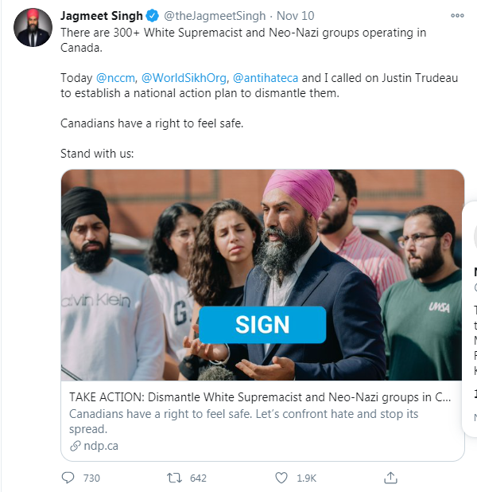

NDP Rank and File Try to get Vote Against Jew Supremacist "IHRA", Jagmeet Singh says no
June 30th, 2021
An underated aspect of realizing how utterly fake and gay politics is, is the realization that it's just as fake and gay for the Donor-Left as it is the Donor-Right. The NDP is, along with the Donor-Right, a completely anti-White institution, and clearly full of mentally ill perverts. However, just like the goal of the Conservative Party of Canada, is to get out in front of White People's response to "fuck Whitey," and normal people's response to nastiness best summarized with child trannies, the real purpose of the NDP is to get out in front of people's response to wars based on lies, jew nationalists doing ethnic cleansings of Palestinians, and billionaires oppressing everybody.
Yves Engler:
TDC_ARTICLE_START
On Saturday New Democratic Party members delivered a victory for Palestinian rights and a blow to the Israel lobby in Canada.
Over 80% of convention delegates voted for a resolution calling for “Ending all trade and economic cooperation with illegal settlements in Israel-Palestine” and “Suspending the bilateral trade of all arms and related materials with the State of Israel until Palestinian rights are upheld.”
TDC_ARTICLE_STOP
Yves Engler
I don't hate Yves Engler. I really don't. I think we could just be looking at some hyper Jimmy Dore effect. For those that don't understand. The Jimmy Dore effect is when you get really into "Progressive" politics. You go full on "bwack peepol be weally oppwessed," "muh gun nuts," "muh conservatives," "muh systemic racism," and so on. However, they also end up going "wait, where the fuck is that socialist healthcare I was promised?" Or "this wasn't supposed to be a shill for war party, when are we getting some punishment for the WMD Liars or justice for Julian Assange?" Basically it's the "not a total shitbag/npc, but still thinks progressivism is real," guy.

Jimmy Dore
I've explained how fake donor politics is before, but I think it's still worth going over. The purpose of the Conservative Party, and Donor-Rightism in general, is to get out in front of White People's response to "fuck Whitey," and make absolutely damn sure that sentiment goes nowhere and White People get zero tangible policy. To get out in front of normal peoples response to, say, child trannies, and make damn sure that goes nowhere.

It's the Donor-Right's job to pretend to fight against this.
On the other side, the Donor-Left's job is to get out in front of the "fuck Jeff Bezos," sentiment, and make sure that goes nowhere. To get out in front of the "fuck the WMD Liars," sentiment, and make sure you get zero tangible victories. To get out in front of the "ethnic cleansing is bad, EVEN if it is done by jews," sentiment that 99% of people have, and cuck those people, giving them L after L after L after L.

It's the Donor-Left's job to pretend to fight against this.
People sometimes get a half correct opinion of "their" side of the Kosher Sandwhich. They'll say things like "the Democrats are a far right corporatist party," like Jimmy Dore, because they correctly deduce that they are completely pro-war and pro-big business. However, the Democrat party isn't "far left," it's "donor ran," just like the Republican Party. They serve the people who write their cheques, and it's the same fucking people.
I think Yves Engler might have Jimmy Dore Syndrome, where he goes even way harder on the jew ethnostate, but he's also blabbing on and on about "muh racialized communities," and doing all this other anti-White shit. Dore occasionally does his "muh black prison rates," shit. Like I said, he's like the more hardcore version of Jimmy Dore.
But because of that he's useful, because he documents just how utterly fraudulent the "left wing," parties here in Canada, the NDP, and the Liberals, are when it comes to being anti-war or anti-corporate.
Anyway, getting way back to the point, he starts off by correctly pointing out that 80% of NDP delegates voted for BDS, an anti-jew nationalist and anti-ethnic cleansing movement, designed to bring justice to the legitimately oppressed Palestinians. Now, what does the NDP leadership, Jagmeet Singh and the rest, do about this?
TDC_ARTICLE_START
CIJA’s post-resolution release and reaction to the NDP convention more broadly highlights how Israel has lost progressives and its lobby is ever more reliant on intimidating those who support Palestinian rights by calling them anti-Semitic. More than a month before the NDP convention CIJA began publicly pressuring the party leadership to suppress a resolution critical of the International Holocaust Remembrance Alliance’s (IHRA) anti-Palestinian definition of antisemitism. The ferocious campaign to suppress NDP members’ ability to debate a document designed to suppress discussion of Palestinian rights succeeded in scaring the NDP leader into erasing the long-oppressed Palestinians (theIHRA resolution never made it to the debate stage). A week ago Jagmeet Singh was asked on CBC’s The House about resolutions submitted to the NDP convention regarding “Canada’s relationship to Israel and the Palestinian territory”. Instead of responding to the question, he mentioned “anti-Semitism” four times. Asked again about “resolutions that in a sense condemn Israel’s treatment of the Palestinians”, Singh again failed to mention Palestine or Palestinians. Instead, he talked about “increased hate crimes also against people of the Jewish faith”.
TDC_ARTICLE_STOP

Jagmeet Singh
Good old Jag. Always there to... make excuses for the violent racial cleansing of those filthy subhuman Palestinian Goy Cattle. Then go and viciously attack the goyim who express disapproval of the... violent racial cleansing.
Do you see what I mean when I say that the NDP's main job is to get out in front of these people, and make absolutely damn sure they never get anything? With Jagmeet Singh, who needs the Conservatives?
TDC_ARTICLE_START
The disastrous interview generated a burst of criticism regarding the party leadership’s anti-Palestinianism and gave momentum to pro-Palestinian forces within the party prior to the convention. In a significant reversal, the morning after the convention vote Singh defended the resolution that CBC’s chief political correspondent Rosemary Barton described as “your party voted overwhelmingly to slap sanctions on settlements and to ban arms sales to Israel.” Marshaling the legitimacy of “human rights groups”, Singh said it was important to “apply pressure on Israel to respect the rights of Palestinians.” While he equivocated somewhat in fully endorsing the Palestine Resolution, Singh repeated the importance of applying “pressure” on Israel three times.
TDC_ARTICLE_STOP

Oh man, am I ever getting Trump flashbacks. "Goys, I think Trump is a total cuck and is selling us out." *Trump bombs Syria again. "Yeah, definitely, off the Trump train." TRUMP: "Why are we taking all these people from shithole countries?" "Oh shit, maybe Trump is still based?" Of course, Trump saying something moderately "based," is the grand totality of his advocacy for White People. That's it, he said a thing. He tweeted.
I completely get it. Singh is the only Canadian politician, Green party included, who will even say "we need to apply pressure on Israel." Problem is, that's it. That's the entire extent to which anti-ethnic cleansing Palestinian activists will ever get from Jagmeet Singh and the NDP. That's it. You've reached the high point of Jagmeet Singh's advocacy for Palestinians. It's over now.
TDC_ARTICLE_START
An empty vessel on this issue, Singh goes wherever pushed. That’s the case for most of the NDP caucus. Two days ago MP Charlie Angus tweeted, “I keep getting mentioned by some who want the NDP to oppose the international definition of anti-semitism. This is not the way to go. I support motions calling for justice for the Palestinian people. But I also remain deeply concerned about the growing threat of anti-semitism.”
As far as I can tell no one said Angus backed the anti-IHRA definition resolution. Rather they pointed out that in January a Conservative member of the Ontario Legislature and a top Israeli diplomat both used the IHRA definition to attack Angus for sharing a Guardian article critical of Israel’s failure to vaccinate Palestinians for Covid 19. Angus’ name was raised as a concrete example of how the IHRA definition tramples on Palestinian rights. But, Angus cowardly threw those who defended him from smears under the Israel lobby bus.
TDC_ARTICLE_STOP
Charlie Angus, NDP MP from Sudbury
Does this sound at all familiar, goy? Do you see that? The NDP LITERALLY WORKING WITH CONSERVATIVES TO PURGE "ANTI-SEMITES." Do you see how the anti-Racial Cleansing, pro-Palestine, anti-Jew Nationalist activists get absolutely pumped and dumped by the NDP? Do you see that, goy? The purpose of the NDP is to make sure these people get nothing. The parallels between White Activists, and "social conservatives," another name for regular people, get treated by the Donor-Right party, could not be more obvious.
I feel like I wrote this exact same article in reverse for the BC provincial election multiple times. Here's an example I wrote about of the Conservative Party removing a candidate because pervert activists attacked her before an election. They couldn't even get a replacement, so they just threw the seat. It would not surprise me at all if the NDP did the same for some "anti-semite," who criticized the jew Ethnostate a little bit too hard.
TDC_ARTICLE_START
Still, Angus’ formulation is worth reflecting on. With most of the backlash focused against the anti-IHRA definition resolution the Palestine Resolution seemed reasonable. Multi-pronged campaigns can be effective.
It took immense effort by a broad array of activists to get more than 30 (Palestine Resolution) and 40 (IHRA resolution) riding associations, as well as numerous other groups, to endorse these resolutions but it was worth it. The NDP convention confirms there is significant popular support for Palestinian rights. Polls have shown that Canadians are widely sympathetic to bringing pressure to bear on Israel for its colonization. My bet is that most of the 15% of NDP delegates who voted against the Palestine Resolution did so out of concern for the backlash, not the substance of the resolution.
While the Palestine resolution was a win for Palestinian rights and blow to the Israel lobby, it was also a small victory for grassroots democracy and proof that people can be mobilized by calls for justice in international affairs.
TDC_ARTICLE_STOP
But was it though? What it showed was how completely anti-democratic the system is. That's great, and very useful, but it's far from a "victory for democracy."
I'll be covering more of Engler's articles, they are really great.